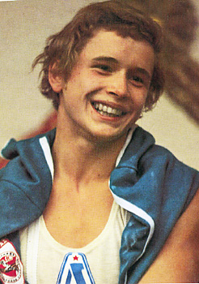

Alexander Dityatin (USSR)
1979 World AA Champion
1980 Olympic AA
Champion

Medal Total
- Olympic Games: 3 Gold, 6
Silver, 1 Bronze
- World Championships: 7
Gold, 2 Silver, 3 Bronze
- World Cup: 4 Gold, 4
Silver, 4 Bronze
- European Championships: 2
Gold, 1 Silver
Dityatin was born on August 7,
1957 in Leningrad. (Trivia: He shares his birthdate with the 1980 Olympic
women's champion Elena Davydova.) His father Nikolai was a WWII veteran and worked as a locksmith, and his mother Fedosiya worked in a factory. Dityatin
began gymnastics at age 9 and trained at Dynamo Leningrad with coach Anatoly Yarmovsky. His first big victory was his first-place finish at the 1973 Jr. USSR Championships in the Candidate for Master of Sport category. In 1975, he came into his own, winning the USSR Cup and USSR Spartakiade. An elbow injury kept him out of the 1977 European Championships and World Cup, but he returned strong in 1978 to win the World Cup AA title. He was the first
gymnast to win 8 medals in one Olympic Games. He still lives in St.
Petersburg and is married with two sons. The oldest, Alexei, is a physical education teacher in St. Petersburg. Dityatin was inducted
into the International Gymnast Hall of Fame in 2004.
- Competition Results
1972
Jr. USSR Championships (Candidate for Master of Sport): 1st AA
- 1973
- Jr. Friendship Tournament (Druzhba): 3rd
Team, 3rd
AA, 2nd FX, 2nd PH, 6th R
-
-
- 1974
- Jr. Friendship Tournament (Druzhba):
1st
AA, 1st PB, 3rd PH, 3rd HB, 4th FX
Jr. USSR Championships: 2nd AA, 2nd PB, 2nd HB
-
- 1975
- Chunichi Cup: 3rd AA
- European Championships: 3rd AA, 2nd PB, 3rd
RG, 4th
HB, 5th V
- Moscow News: 4th AA, 1st PH, 2nd RG
- Pre-Olympics: 3rd AA, 1st PH, 3rd HB, 4th RG, 5th FX
USSR Championships: 1st AA, 1st PH, 2nd PB, 2nd HB, 5th R, 6th V
- USSR Cup: 1st Team, 1st AA
- USSR Spartakiade: 1st AA
- World Cup: 3rd AA, 4th PH, 4th RG,
4th PB, 5th FX, 5th HB, 6th V
-
- 1976
- Olympic Games: 2nd Team, 2nd RG, 4th
AA, 6th PH
USSR Championships: 1st PH
- USSR Cup: 5th Team, 3rd AA, 1st PH, 3rd
RG
-
- 1977
- All-Union Youth Sports Games: 6th Team, 1st AA, 2nd R
Jr. USSR Championships: 1st AA
Ontario Cup: 1st AA
- University Games: 2nd V
USSR Championships: 18th AA, 2nd PB, 3rd V, 6th PH
- USSR Cup: 2nd Team, 3rd AA, 2nd PB, 3rd
V
- Wereld Turn Top: 1st AA, 1st PH, 1st RG, 3rd V
-
- 1978
- USSR Championships: 1st R, 2nd PB, 3rd
HB, 4th PH, 4th V
- USSR Cup: 4th Team, 1st AA, 1st R, 2nd
PB, 3rd HB
- World Championships: 2nd Team, 2nd RG, 3rd AA,
3rd FX, 4th PH, 4th V
- World Cup: 1st AA, 1st RG, 2nd PH, 3rd FX, 3rd
V, 3rd HB, 8th PB
-
- 1979
- European Championships: 4th AA, 1st PH, 1st RG, 2nd PB,
4th HB,
- Pre-Olympics: 1st AA, 1st RG, 2nd V
- World Cup: 1st AA, 1st RG, 2nd V, 2nd PB, 2nd
HB, 4th FX
- World Championships: 1st Team, 1st AA, 1st V,
1st RG, 3rd HB, 4th PH, 4th PB
USSR Championships: 1st AA, 1st R, 2nd PH, 2nd V, 2nd PB, 3rd FX, 3rd HB
USSR Cup: 1st AA, 3rd FX, 3rd HB
- USSR Spartakiade: 1st Team, 2nd AA, 1st
R, 2nd V, 4th FX, 4th PH, 4th PB, 5th HB
-
- 1980
- Olympic Games: 1st Team, 1st AA, 1st RG, 2nd
PH, 2nd V, 2nd PB, 2nd HB, 3rd FX
- USSR Cup: 1st AA
-
- 1981
- World Championships: 1st Team,
36th AA, 1st RG, 1st PB,
6th PH
-
- 1982
- Budapest Invitational: 1st RG
USSR Championships: 5th prelims
- World Cup: 5th AA
-
- 1983
- USA-USSR Dual Meet: 1st Team, 12th AA
- This page was created on November 9, 1997 and was
last updated on
January 19, 2015.
© Gymn Forum